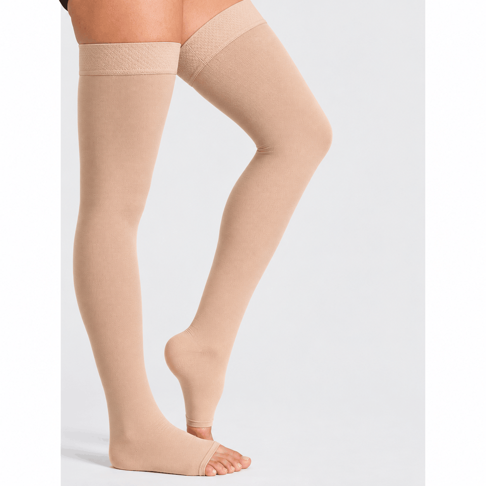

Set 2 Ciorapi Compresivi Medicali pentru Femei, Bej
Set de 2 ciorapi compresivi pentru femei, 15–20 mmHg, până la coapsă, cu vârf deschis și bandă elastică superioară.
Prețul și stocul sunt afișate conform catalogului furnizat. Confirmă disponibilitatea, cantitatea și condițiile comerciale înainte de comandă.
DETALII PRODUS
Descriere
Setul de 2 ciorapi compresivi pentru femei, cu presiune graduală de 15–20 mmHg, este conceput pentru a oferi susținere membrelor inferioare printr-un sistem de compresie distribuită progresiv. Cu un design lung, până la nivelul coapselor, și o structură textilă elastică, produsul reprezintă o opțiune practică pentru persoanele care își doresc susținere suplimentară și confort în timpul activităților cotidiene.
Compresia graduală constituie principala caracteristică funcțională a produsului. Acest sistem presupune exercitarea unei presiuni mai ridicate în zona gleznei, care scade progresiv către partea superioară a piciorului. Ciorapii compresivi cu această caracteristică sunt utilizați pentru susținerea circulației venoase și pot contribui la diminuarea senzației de picioare grele sau obosite, în funcție de particularitățile individuale.
Susținere graduală de la gleznă până la coapsă
Nivelul de compresie declarat, de 15–20 mmHg, poziționează produsul în categoria ciorapilor cu compresie ușoară spre moderată, în funcție de sistemul de clasificare utilizat.
Designul lung permite acoperirea gleznei, gambei, genunchiului și a unei părți importante din coapsă, oferind susținere pe o suprafață extinsă a membrului inferior. Pentru obținerea unei compresii corespunzătoare, alegerea mărimii trebuie realizată pe baza dimensiunilor piciorului și a recomandărilor producătorului.
Material elastic și adaptabil formei piciorului
Structura textilă elastică este concepută pentru a urmări conturul natural al membrelor inferioare, permițând adaptarea materialului la forma piciorului și la mișcările obișnuite.
Țesătura cu aspect uniform oferă o suprafață netedă, iar flexibilitatea materialului facilitează integrarea ciorapilor în ținutele zilnice. Culoarea bej, apropiată de nuanța pielii, contribuie la un aspect discret atunci când produsul este purtat cu diferite articole vestimentare.
Design cu vârf deschis pentru libertatea degetelor
Configurația cu vârf deschis reprezintă un avantaj distinctiv al acestui model. Partea frontală a ciorapului lasă degetele descoperite, în timp ce materialul acoperă zona călcâiului și restul piciorului.
Această construcție poate fi preferată de persoanele care doresc să evite acoperirea completă a degetelor, fără a renunța la susținerea oferită de materialul compresiv în zonele acoperite.
Bandă superioară pentru fixare
Partea superioară a ciorapilor este prevăzută cu o bandă textilă lată, concepută pentru a contribui la menținerea poziției produsului pe coapsă.
Construcția acesteia permite distribuirea contactului pe o zonă mai extinsă, în timp ce materialul elastic urmărește forma piciorului. Fixarea corespunzătoare depinde de alegerea mărimii potrivite și de circumferința coapsei.
Utilizare în activitățile cotidiene
Ciorapii cu compresie graduală pot fi integrați în diferite contexte de utilizare, inclusiv în perioadele prelungite de stat în picioare sau pe scaun, atunci când susținerea venoasă este recomandată.
Produsul poate fi utilizat în activitățile zilnice, cu respectarea indicațiilor producătorului. În cazul persoanelor care prezintă afecțiuni circulatorii sau alte probleme medicale, alegerea nivelului de compresie și durata purtării trebuie stabilite împreună cu un specialist.
Avantaje pentru distribuitori și comercianți B2B
Setul de 2 bucăți oferă o configurație comercială practică, potrivită pentru magazinele de articole ortopedice, comercianții de produse pentru confortul picioarelor, distribuitorii en-gros și platformele marketplace.
Combinația dintre lungimea până la coapsă, compresia graduală de 15–20 mmHg și designul cu vârf deschis permite diferențierea produsului în cataloagele de articole compresive și accesorii pentru susținerea membrelor inferioare.
Caracteristici principale
- Set de 2 bucăți: conține doi ciorapi compresivi, pentru ambele picioare.
- Compresie graduală 15–20 mmHg: presiune distribuită progresiv, mai ridicată la gleznă și redusă către coapsă.
- Model pentru femei: design adaptat utilizării feminine.
- Lungime până la coapsă: acoperire extinsă a membrelor inferioare.
- Susținerea circulației venoase: concepuți pentru aplicarea unei presiuni externe graduale.
- Vârf deschis: permite menținerea degetelor descoperite.
- Călcâi acoperit: construcție textilă care urmărește forma piciorului.
- Material elastic: permite adaptarea la conturul membrelor inferioare.
- Bandă superioară lată: contribuie la fixarea produsului pe coapsă.
- Textură uniformă: material cu aspect neted, potrivit pentru purtarea sub îmbrăcăminte.
- Culoare bej: aspect discret, apropiat de nuanța naturală a pielii.
- Susținere pentru gambe: compresia acoperă zona inferioară a picioarelor.
- Acoperirea genunchilor și coapselor: design lung pentru susținere pe o suprafață extinsă.
- Confort în activitățile zilnice: concepuți pentru utilizare în condițiile recomandate de producător.
- Format reutilizabil: produs textil care poate fi întreținut conform instrucțiunilor de pe etichetă.
- Purtare individuală: ciorapii pot fi utilizați fără alte accesorii de fixare, dacă mărimea este adecvată.
- Design ergonomic: formă adaptată anatomiei membrelor inferioare.
- Utilizare fără alimentare electrică: sistemul de compresie funcționează prin proprietățile materialului textil.
Comandă și informații
Site-ul funcționează în regim de catalog B2B. Nu există plată online sau coș de cumpărături.
Discută pe WhatsApp →DIN ACEEAȘI CATEGORIE